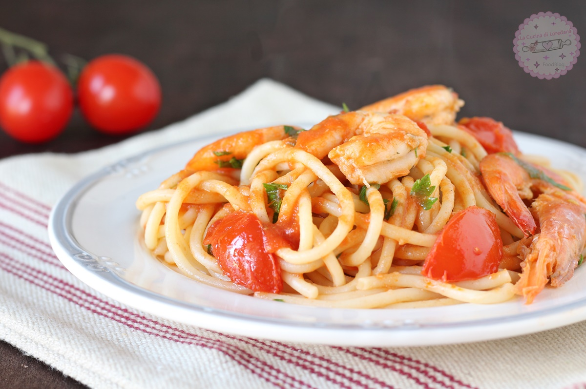

Pasta with prawns

Replicate the magical taste of pasta with prawns abiding by the
following guidelines.
It will drive you in a world of taste.
Ingredients
- Oil
- Pasta
- Tomatoes
- Prawns
- Salt
- Pepper
Steps
- Put in a pan the oil
- Heat it
- When it's hot put the prawns
- Add salt and pepper
- Add tomatoes
- When everything is dense add the already boiled pasta